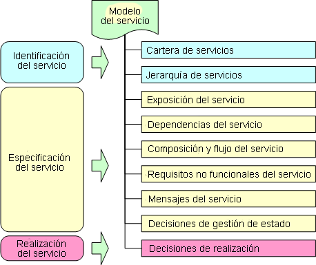
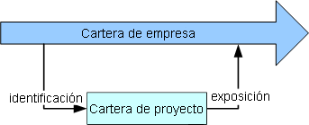

| Producto de trabajo: Modelo de servicio |
 |
|
El modelo de servicio es una abstracción de los servicios de TI de una empresa y dan soporte al desarrollo de una o más soluciones orientadas a servicios. Se utiliza para concebir y documentar el diseño de los servicios de software. Se trata de un producto de trabajo compuesto completo que engloba todos los servicios, proveedores, especificaciones, particiones, mensajes, colaboraciones y relaciones entre ellos. Es necesario para:
|
| Roles | Responsable: | Modificado por: | |
|---|---|---|---|
| Entrada a | Obligatoria: | Opcional:
| Externa:
|
| Salida de | |||
| Esquematización breve | El modelo de servicio es a menudo una colección heterodoxa de activos físicos, lo que incluye modelos de UML, documentos y, posiblemente, entradas en una herramienta de gestión de recursos. No obstante, el modelo de servicio debe contener los siguientes elementos lógicos (consulte la descripción principal).
|
|---|---|
| Descripción principal | El modelo de servicio captura los detalles de un conjunto de servicios a través de varias iteraciones, elaborando progresivamente el detalle. El modelo de servicio se puede utilizar para distintos niveles de ámbito:
El siguiente diagrama muestra los aspectos clave del modelo de servicio, en abstracto, y la relación entre ellos y las actividades Identificación, Especificación y Realización.  Elementos de identificaciónLa primera elaboración empieza con una lista de servicios candidatos de la cartera de servicios creados durante la Actividad: Análisis de activos existentes, mediante técnicas como la descomposición de procesos (consulte Concepto: Descomposición de procesos empresariales). Estos servicios se categorizan según su área funcional y la técnica utilizada para identificarlos. Resulta clave observar que la cartera de servicios que describimos aquí es una cartera específica de proyecto y contiene los servicios candidatos identificados mediante las distintas técnicas de análisis descritas en la Actividad: Análisis de activos existentes. Los servicios identificados en esta etapa se proporcionan a menudo como un nombre y su posible descripción funcional. Un simple documento que contiene esta lista de servicios puede a menudo ser suficiente, no obstante, si el enfoque de UML se utiliza, entonces la cartera se mantiene como una colección de Artefactos: Especificación de servicio y se puede producir utilizando Informe: Cartera de servicios. Tan pronto como sea posible los servicios de la lista se organizan en una jerarquía que utiliza un esquema de clasificación funcional (normalmente basado en áreas funcionales identificadas durante la descomposición de dominio). Dicha jerarquía muestra un esquema de clasificación principal para servicios (la de una dependencia de invocación de proceso y, como tal, es valiosa en el entendimiento de las relaciones entre servicios identificados durante actividades de descomposición). De nuevo, la representación de la jerarquía puede estar en un documento, una hoja de cálculo o un modelo de UML (en tales casos tenderíamos a utilizar el Artefacto: Partición de servicios para modelar áreas funcionales). Tenga en cuenta que es también posible que el término Cartera de servicios represente la cartera de servicios de toda la empresa (tal como se expresó en Concepto: Cartera de servicios), que tiene un ciclo de vida más allá de aquel de la cartera específica del proyecto. Realmente, existe una relación entre la empresa y la cartera de proyectos, tal como se muestra en la siguiente figura.  Elementos de especificaciónUno de los primeros pasos dentro de la Actividad: Realizar especificación de servicio es decidir y documentar la exposición de los servicios (es decir, documentar aquellos servicios candidatos que se vayan a desarrollar y exponer como servicios verdaderos). Una técnica clave es la Tarea: Aplicar pruebas decisivas de servicios, que proporciona instrucciones específicas sobre cómo evaluar servicios para su exposición. Desde el punto de vista de la representación UML del modelo de servicio, las especificaciones de servicio que se desarrollaron durante la Identificación están marcadas, con la propiedad de estado, en expuestas y a continuación detalladas posteriormente dentro del modelo. Durante el análisis de servicios para exposición, se puede iniciar la agrupación de servicios en ofertas lógicas y esto se puede modelar en UML con el Artefacto: Proveedor de servicios. En la documentación de especificaciones de servicio resulta clave capturar todas las dependencias de servicio por distintos motivos. Por ejemplo, los servicios con un número alto de dependencias son más difíciles de reutilizar en distintos entornos, mientras que los servicios con muchas dependencias indican funciones centrales. Las dependencias de servicio pueden capturarse textualmente, a menudo en forma de tabla (consulte Informe: Dependencias de servicio) o se pueden modelar mediante la representación UML del modelo de servicio. También es importante darse cuenta de que algunas dependencias se deben a comunicación entre servicios y existen por tanto detalles asociados con esta dependencia (protocolos de comunicación necesarios, seguridad, etc.) que se pueden documentar utilizando el modelo UML y, en concreto, el Artefacto: Canal de servicio en modelos de colaboración. En la definición de servicios es común reconocer servicios compuestos que existen sólo para coreografiar un conjunto de servicios más detallados, esta Composición y flujo debería describir la relación entre los servicios compuestos así como las dependencias entre servicios expresada por el flujo que los recorre. En la representación UML esta composición puede estar bien descrita (clases compuestas) así como el flujo (actividades, interacciones) y las técnicas se describen en Concepto: Composición de servicio y coreografía. Resulta clave capturar también los requisitos no funcionales de los servicios (en los que muchos de los temas anteriores se centran más en los requisitos funcionales) y capturar con el mayor número de detalles posibles la calidad de servicio, la política, etc. En este área es posible expresar los requisitos en un documento textual, incluso más difícil expresarlo directamente en UML, pero puede expresarse más fácilmente utilizando un producto de gestión de requisitos. Cuando se utiliza la representación UMl del modelo de servicio recomendamos el uso del Artefacto: Documento de arquitectura de software y Artefacto: Especificaciones complementarias del RUP existente para capturar requisitos no funcionales. Un aspecto de la arquitectura de soluciones no funcionales se refiere a la distribución y disponibilidad de los servicios que se pueden documentar con el modelo UML y, en particular, el Artefacto: Partición de servicio y Artefacto: Pasarela de servicio. Obviamente, los detalles de Mensajes de servicio son clave para el desarrollo de especificaciones de servicio utilizables. Estos mensajes se pueden derivar de modelos de alto nivel o pueden directamente expresarse en algún formato específico de tecnología (caso del esquema XML). Si los mensajes se describen textualmente, en un lenguaje de esquema, o en el modelo UML, estas definiciones deberían tener en cuenta las consideraciones clave que se documentan en Tarea: Diseño de mensajes y su correspondiente Directriz: Archivos adjuntos de mensaje. Aunque es cierto que en una arquitectura orientada a servicios nos esforzamos por realizar servicios sin estado, no siempre es posible (ni incluso preferible) hacer de esto un objetivo fijo; el tema de Decisiones sobre gestión de estado se ofrece para permitir al diseñador tiempo para reflexionar en los equilibrios, el coste y las ventajas de la gestión de estado de los servicios. En apoyo de estas decisiones, el tema Directriz: Gestión de estado para servicios ofrece ejemplos de tipos de estado que a menudo tienen que mantenerse por un servicio. Elementos de realizaciónLa realización de servicios se refiere fundamentalmente a tres áreas, las decisiones relativas a la realización real de los servicios, la identificación de subsistemas y componentes para realizar las especificaciones de servicio y, por último, el desarrollo de estos componentes. Al documentar decisiones de realización es importante tener razones fundamentadas y detalladas para la elección de un enfoque de origen y desarrollo, tal como se describe en la Tarea: Documentar decisiones de realización de servicio. De nuevo, en un modo parecido al de los requisitos no funcionales de arriba, a menudo resulta difícil expresar estas decisiones (verdaderamente al detalle) en la representación UML y, por tanto, esperamos que las elecciones realizadas para cada servicio se documenten de forma independiente. |
| Opcional | |
|---|---|
| Planeado |
| Plantillas | |
|---|---|
| Informes | |
| Ejemplos |
| Impacto de no tener | Sin este producto sería difícil definir correctamente los servicios y especificar los componentes necesarios para realizarlos. Esto podría llevar a huecos en la cartera de clientes, proliferación de servicios innecesarios, incoherencias en cómo se exponen los servicios e incoherencias en el diseño de componentes necesarios para realizar los servicios. |
|---|---|
| Razones para no necesitar | Este producto no es necesario si no necesitamos externalizar descripciones de servicio en el borde de un límite organizativo importante (por ejemplo, en el borde de una línea empresarial principal dentro de una empresa, o en el borde de la empresa). |
| Opciones de representación | El modelo de servicio es un producto de trabajo grande y normalmente se desarrolla con un gran número de técnicas; por ejemplo, se utilizan modelos UML para describir los elementos de servicio. No obstante la presentación del producto de trabajo puede ser un documento que contenga diagramas del modelo UML. El nivel en el que todo proyecto concreto confía en los modelos UML dependerá de las habilidades y el currículo del personal implicado y también de las expectativas de los interesados en el proyecto. En general, recomendamos que, en la medida de lo posible, el modelo se desarrolle al máximo mediante representación UML, se integre con contenido adicional (especialmente texto descriptivo) y se presente en su forma final como documento. Para la representación UML, consulte Plantilla: Modelo de servicio en UML. Para la Representación de documentación, consulte Plantilla: Modelo de servicio en Word. |
| Listas de comprobación | |
|---|---|
| Conceptos |
© Copyright IBM Corp. 1987, 2006. Reservados todos los derechos. |